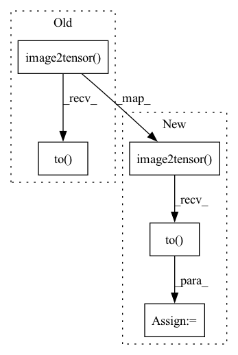

Pattern ID :32108
Before Change
lr_image = cv2.cvtColor(lr_image, cv2.COLOR_BGR2RGB)
// Convert Y image data convert to Y tensor data
lr_tensor = imgproc.image2tensor(lr_image, range_norm=False, half=True).to( config.device) .unsqueeze_(0)
hr_y_tensor = imgproc.image2tensor(hr_y_image, range_norm=False, half=True).to(config.device).unsqueeze_(0)
// Only reconstruct the Y channel image data.After Change
lr_image = cv2.cvtColor(lr_image, cv2.COLOR_BGR2RGB)
// Convert Y image data convert to Y tensor data
lr_tensor = imgproc.image2tensor( lr_image, range_norm=False, half=True) .unsqueeze_(0)
hr_y_tensor = imgproc.image2tensor(hr_y_image, range_norm=False, half=True).unsqueeze_(0)
// Copy to CUDA
lr_tensor = lr_tensor.to(device=config.device, memory_format=torch.channels_last, non_blocking=True)
hr_y_tensor = hr_y_tensor.to(device=config.device, memory_format=torch.channels_last, non_blocking=True)
// Only reconstruct the Y channel image data.
with torch.no_grad():In pattern: SUPERPATTERN
Frequency: 4
Non-data size: 5
Instances Fragment ID: 94065723
Project Name: lornatang/esrgan-pytorch
Commit Name: 70fe877925fd4c68e5e17573e987de7fd6f8818a
Time: 2022-04-22
Author: liuchangyu1111@gmail.com
File Name: validate.py
M Class Name: AnonimousClass
N Class Name: AnonimousClass
M Method Name: main(0)
N Method Name: main(0)
M Parent Class:
N Parent Class:
M File Name: validate.py
N File Name: validate.py
M Start Line: 29
M End Line: 87
N Start Line: 72
N End Line: 94
Before Change
// Cal PSNR
sr_image = sr_image.astype(np.float32) / 255.
sr_y_image = imgproc.bgr2ycbcr(sr_image, use_y_channel=True)
sr_y_tensor = imgproc.image2tensor(sr_y_image, range_norm=False, half=True).to( config.device) .unsqueeze_(0)
total_psnr += 10. * torch.log10(1. / torch.mean((sr_y_tensor - hr_y_tensor) ** 2))
After Change
// Cal PSNR
sr_image = sr_image.astype(np.float32) / 255.
sr_y_image = imgproc.bgr2ycbcr(sr_image, use_y_channel=True)
sr_y_tensor = imgproc.image2tensor( sr_y_image, range_norm=False, half=True) .unsqueeze_(0)
// Copy to CUDA
sr_y_tensor = sr_y_tensor.to(device=config.device, memory_format=torch.channels_last, non_blocking=True)
total_psnr += 10. * torch.log10_(1. / torch.mean((sr_y_tensor - hr_y_tensor) ** 2))
print(f"PSNR: {total_psnr / total_files:4.2f}dB.\n") Fragment ID: 94065721
Project Name: lornatang/real_esrgan-pytorch
Commit Name: df74602d06ea8bf3c511901e97f677729a77736e
Time: 2022-04-22
Author: liuchangyu1111@gmail.com
File Name: validate.py
M Class Name: AnonimousClass
N Class Name: AnonimousClass
M Method Name: main(0)
N Method Name: main(0)
M Parent Class:
N Parent Class:
M File Name: validate.py
N File Name: validate.py
M Start Line: 29
M End Line: 87
N Start Line: 29
N End Line: 94
Before Change
sr_image = imgproc.tensor2image(sr, range_norm=False, half=True)
sr_image = sr_image.astype(np.float32) / 255.
sr_y_image = imgproc.rgb2ycbcr(sr_image, use_y_channel=True)
sr_y_tensor = imgproc.image2tensor(sr_y_image, range_norm=False, half=False).to( config.device) .unsqueeze_(0)
hr_image = imgproc.tensor2image(hr, range_norm=False, half=True)
hr_image = hr_image.astype(np.float32) / 255.After Change
hr_y_image = imgproc.rgb2ycbcr(hr_image, use_y_channel=True)
// Convert Y image to Y tensor
sr_y_tensor = imgproc.image2tensor( sr_y_image, range_norm=False, half=False) .unsqueeze_(0)
hr_y_tensor = imgproc.image2tensor(hr_y_image, range_norm=False, half=False).unsqueeze_(0)
// Convert CPU tensor to CUDA tensor
sr_y_tensor = sr_y_tensor.to(device=config.device, memory_format=torch.channels_last, non_blocking=True)
hr_y_tensor = hr_y_tensor.to(device=config.device, memory_format=torch.channels_last, non_blocking=True)
// measure accuracy and record loss
psnr = 10. * torch.log10_(1. / psnr_criterion(sr_y_tensor, hr_y_tensor)) Fragment ID: 94065720
Project Name: lornatang/real_esrgan-pytorch
Commit Name: df74602d06ea8bf3c511901e97f677729a77736e
Time: 2022-04-22
Author: liuchangyu1111@gmail.com
File Name: train_realesrnet.py
M Class Name: AnonimousClass
N Class Name: AnonimousClass
M Method Name: validate(7)
N Method Name: validate(7)
M Parent Class:
N Parent Class:
M File Name: train_realesrnet.py
N File Name: train_realesrnet.py
M Start Line: 396
M End Line: 412
N Start Line: 406
N End Line: 422
Before Change
hr_image = imgproc.tensor2image(hr, range_norm=False, half=True)
hr_image = hr_image.astype(np.float32) / 255.
hr_y_image = imgproc.rgb2ycbcr(hr_image, use_y_channel=True)
hr_y_tensor = imgproc.image2tensor(hr_y_image, range_norm=False, half=False).to( config.device) .unsqueeze_(0)
// measure accuracy and record loss
psnr = 10. * torch.log10(1. / psnr_criterion(sr_y_tensor, hr_y_tensor))
After Change
// Convert Y image to Y tensor
sr_y_tensor = imgproc.image2tensor(sr_y_image, range_norm=False, half=False).unsqueeze_(0)
hr_y_tensor = imgproc.image2tensor( hr_y_image, range_norm=False, half=False) .unsqueeze_(0)
// Convert CPU tensor to CUDA tensor
sr_y_tensor = sr_y_tensor.to(device=config.device, memory_format=torch.channels_last, non_blocking=True)
hr_y_tensor = hr_y_tensor.to(device=config.device, memory_format=torch.channels_last, non_blocking=True)
// measure accuracy and record loss
psnr = 10. * torch.log10_(1. / psnr_criterion(sr_y_tensor, hr_y_tensor))
Fragment ID: 94065714
Project Name: lornatang/esrgan-pytorch
Commit Name: 70fe877925fd4c68e5e17573e987de7fd6f8818a
Time: 2022-04-22
Author: liuchangyu1111@gmail.com
File Name: train_rrdbnet.py
M Class Name: AnonimousClass
N Class Name: AnonimousClass
M Method Name: validate(6)
N Method Name: validate(6)
M Parent Class:
N Parent Class:
M File Name: train_rrdbnet.py
N File Name: train_rrdbnet.py
M Start Line: 256
M End Line: 272
N Start Line: 265
N End Line: 281